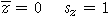

| standardised value, |
|---|
Units-free variables
The standardised form of a variable X is found by subtracting its mean then dividing by its standard deviation,
| standardised value, |
|---|
The resulting values are called z-scores and each z-score tells you how many standard deviations above the mean the value is.
Whether a variable consists of temperatures in degrees Celsius and Fahrenheit, its z-scores will be the same. In the same way, standardised distances are the same whether the original values were recorded in miles or kilometers.
Properties of z-scores
A standardised variable always has zero mean and standard deviation one.

Since approximately 95% of values are within 2 standard deviations of the mean in most distributions and almost all are within 3 standard deviations of the mean (see the 70-95-100 rule-of-thumb),
From its z-score, you can tell whether any value is high (with z over +2) or low (with z under -2) in relation to the other individuals.
Class marks in exams
Since the z-scores for each exam are relative to that exam's mean and st devn, they correct the raw marks for the different levels of difficulty of the different exams.
The table below shows all z-scores together.
Class marks in exams